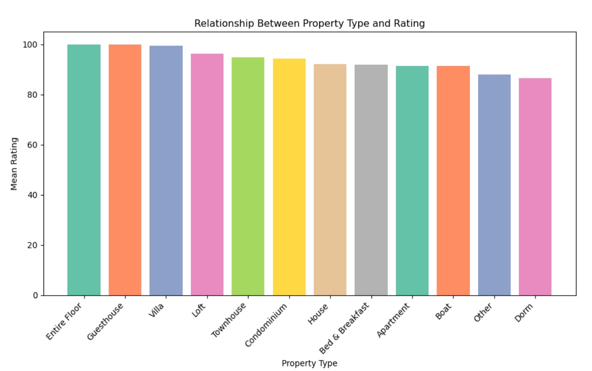
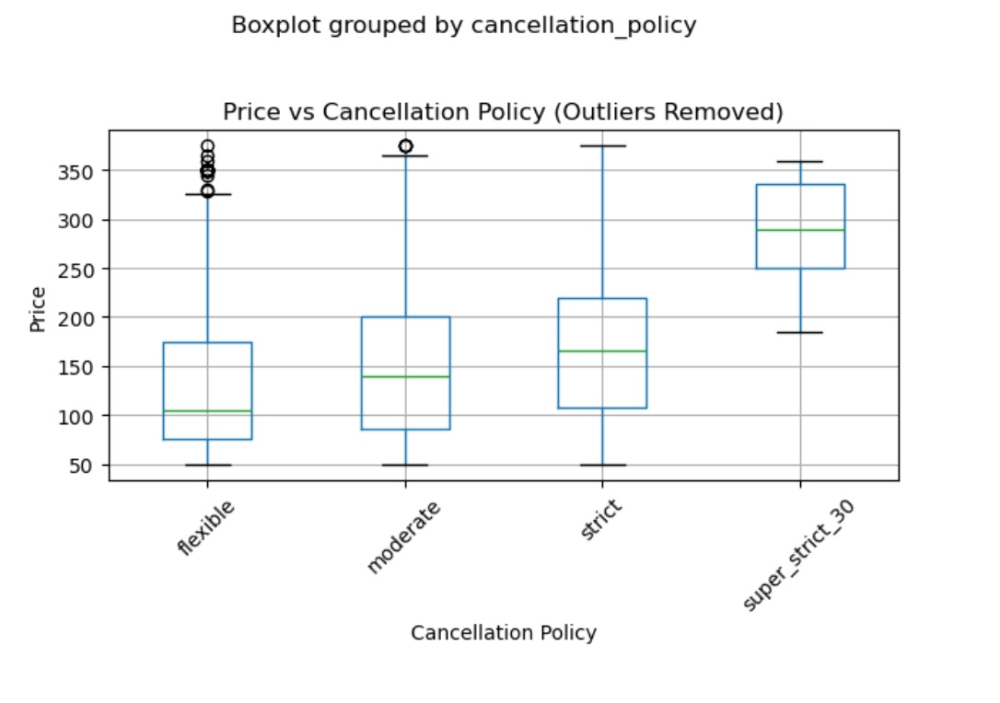

Airbnb In Boston Analysis
Introduction
Our central research question is to explore and analyze different features of highly rated airbnb’s in Boston.
Our working definition of highly rated airbnb’s would be airbnb’s that have an overall rating of 4 stars and
above. Airbnb as a business has been under a lot of pressure lately regarding their business practice of
displacing the native population from their neighborhoods. Due to this, increased housing prices and the
displacement of minority populations has caused some state legislation to ban airbnb. Boston has been one city
that has been considering this alternative. Disrupting the airbnb market would be a huge win for residents of
the city, but this begs the question– how will this ban of the majority of airbnb properties affect the overall
housing market in one of the most expensive cities to live in? Our analysis will uncover what features and
prices influence what is considered a highly rated airbnb and how these different airbnb’s influence the housing
market. We hope to provide interesting data visualizations that show what area these airbnb’s are in and how
these locations are suffering from the negative impact of airbnb’s.
To learn more about the Airbnb and what people value in them,
you can visit What
do guests value most in Airbnb accommodations? or explore
analysis reports from
Journal
of Housing Economics.
Introduction to the data
The dataset we chose is sourced from Kaggle, and provides information about the listing activity of homestays in
Boston, MA, collected since 2008 through the Airbnb platform. The dataset is specifically focused on the Boston
area and contains a total of 3,585 rows and 95 columns. The detail information about some of the key property
characteristics
are listed in the following table:
| Variable Name |
| Pricing |
| Availability
|
| Location
|
| Review score
|
| Cancelation Policy |
| Property type
|
| Room type
|
| Number of bedrooms and bathrooms
|
| Amenities |
Relationship Between Property Type and Rating

The bar chart reveals insightful patterns about how different types of properties are rated on average.
It's notable that properties where the entire floor is included, perhaps indicating more spacious or
exclusive accommodations, tend to receive the highest mean ratings. On the other hand, dorm-style
accommodations, which often offer shared spaces and more basic amenities, tend to have the lowest mean
ratings.
While there is a discernible difference between the highest and lowest mean ratings, it's interesting to
note that the contrast isn't as significant as one might expect. This suggests that while certain types
of properties may be inherently more appealing to guests, factors such as the overall quality of
service, cleanliness, communication, and amenities provided can significantly influence ratings across
different property types.
Relationship Between Property Type and Airbnb Price
The boxplot also shows the relationship between the different property types and price for the Airbnb's in Boston.
Property types like boats had the highest price on average, with an average of about $4250, whereas the Camper/RV and Dorm property types
had the lowest prices on average, with an average of about $50. It is notable that there is a difference of about $200 between the highest
and lowest average prices.
The property type with the widest range of price was aprtments with a maximum price of about $400 and a minimum price
under $50. The property type with the smallest range of price was Camper/RV with a price of about $50.
It is interesting to see how the type of property in Boston changes the price. Airbnb's with higher prices
may be a higher quality, therefore increasing the price.
Meanwhile, we also believe that the geographical
information is important when evaluating the clusters of different Airbnbs. Therefore, we also make use of geographical information
on Natural Earth.
The website provides the geographical information for making maps for US states.
To make a better data visualization, we focus on just the city of Boston since our data
is aimed at Boston Airbnb data. The clusters represent the amount of Airbnbs in an area
and the color of the clusters indicates how dense an area is (i.e. the color red inidicates
an area with a high volume of Airbnbs). Each dot represents a singular Airbnb and each color
of the dot represents a different property type, and when clicking on the dot, property
type information and the price of that Airbnb is displayed.
In general, neighborhoods such as Kenmore and Back Bay have the highest
concentration of Airbnbs, while other areas such as Jamaica Plain and
Mattapan have the lowest concentration of Airbnbs. Their is evidence to suggest
that Airbnbs located in the Fenway and Roxbury region are contributing
to higher rent prices for residents in this area, especially college students.
The relationship between property type and number of accomodates
We also made an interactive graph using D3 that shows the relationship between the property type of the
Airbnb and the maximum number of accommodates that have stayed in that type of property.
We hoped to discover what kinds of property types are suitable for a larger or smaller number of accommodates.
The interactive component is that hovering the mouse over one bar of the graph will result in
that bar changing color from blue to red, showing the number of accommodates corresponding to the property
type for each property type. This could be useful in terms of helping users fully visualize each bar
and clearly see what the number of accomodates for each property type would be. It helps users
focus their understanding on each specific bar to see the trend.
Property Type vs. Number of Accommodates
In general, houses was the property type with the highest maxium number of accomodates at around 16.
Dorms had the last with a maximum of under 4 accomodates. In conclusion, this data can help
future customers look for Airbnb properties corresponding to the size of their group.
For example, if a group is looking for an Airbnb in Boston and they have a greater number of accommodates,
according to the data, they should look for apartments as they seem to be able to
hold a larger number of accomodates.
The relationship between price and cancellation policy
Moreover, we also want to examine the relationship between
price and different cancellation policies to see if there were
any discernible trends. From the plot we can see that stricter
cancellation policies correlate with more expensive Airbnbs.
The least strict cancellation policy, 'flexible', had the lowest price range
while the strictest cancellation policy, 'super strict' had the highest
price range.
Based on this information, we can conclude that stricter cancellation policies
indicate a higher price tag on an Airbnb. We did have to remove outliers
to adjust the scale of the boxplot and make them more visible, and the
height of each boxplot indicates that there is a lot of variability
in the price ranges within each cancellation policy. However, there is
still enough difference between each boxplot to make this conclusion.

The relationship between number of accomodates, rating, and price
We also created an interactive scatter plot so that
our users can select an Airbnb and see information on the number of
accomodates, the price of the Airbnb, and the rating for the Airbnb.
From this plot you can see that the price for each Aibnb no matter the
number of accomodates does not exceed ~500 dollars. We can also see that
there is a range of variability when it comes to the ratings of each Airbnb
for each number of accomodates. The Airbnb with the highest price (200) and the highest
number of accomodates (16) has a rating of 95. We can also see the Airbnb with the
cheapest price (20) and the lowest number of accomodates (1) has a rating of 80.
Summary
In this visualization analysis, we what features and prices influence what is considered a highly rated airbnb
and how these different airbnb’s influence the housing market. Out data visualizations that show what area these
airbnb’s are in and how these locations are suffering from the negative impact of airbnb’s.
Conclusion
- Most Airbnbs are located in the Back Bay and Kenmore regions.
- Airbnbs in the Roxbury region might contribute to rent price increases.
- There are fewer Airbnbs as you move away from the city.
- Higher ratings of Airbnbs correlate with more private rental spaces.
- There is a lot of variability in prices concerning cancellation policies, property types, and the number of
accommodates.